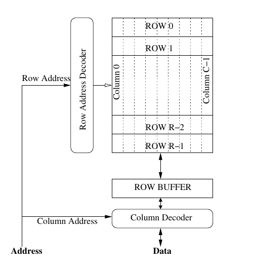

Thomas Moscibroda
Onur Mutlu
@microsoft
Introduction
- The transition from single-core to multi-core systems has introduced major performance and security challenges.
- Multiple programs running on shared DRAM systems can interfere with each other’s memory accesses, leading to performance degradation and security vulnerabilities.
- This paper introduces a new security problem that arises due to the core design of multi-core architectures – a denial of service (DoS) attack that was not possible in single-core systems.
- An aggressive memory-intensive program can severely impact the performance of other threads with which it is co-scheduled. This is called a Memory Performance Hog (MPH).
- This problem worsens with an increasing number of cores, as the impact grows exponentially.
- An MPH can be used to perform DoS attacks that fool users into thinking other applications are inherently slow, even without causing easily observable performance issues.
- A regular application can unintentionally behave like an MPH and damage the memory-related performance of co-scheduled threads.
DRAM Architectures
- DRAM memory is an expensive resource in modern systems. Creating a separate DRAM system for each core is not feasible.
- In a partitioned DRAM system, a processor accessing a memory location needs to issue a request to the DRAM partition that contains the data for that location.
DRAM Memory Systems

- Row Hit: Accessing a row already in the row-buffer. It has the lowest latency (around 40-50 ns in commodity DRAM).
- Row Conflict: Accessing a different row than the one currently in the row-buffer, requiring the row-buffer to be written back before the new row can be accessed.
- Row Closed: No row in the row-buffer, necessitating a read from the memory array before column access.
DRAM Controller
- The DRAM controller mediates between on-chip caches and off-chip DRAM memory. It receives read/write requests from L2 caches.
- The memory access scheduler is responsible for selecting memory requests from the memory request buffer to send to the DRAM memory.
Memory Access Scheduling Algorithm
- Current memory access schedulers typically employ the First-Ready First-Come-First-Serve (FR-FCFS) algorithm, which prioritizes requests in the following order:
- Row-hit first: Prioritizes requests that hit the row already in the row-buffer.
- Oldest-within-bank first: Prioritizes requests that arrived earliest within the same bank.
- Oldest-across-banks first: Prioritizes the earliest arrival time among requests selected by individual bank schedulers.
Vulnerabilities of Multi-Core DRAM Memory System to DoS Attacks
- Current DRAM memory systems do not distinguish between the requests of different threads.
- Unfairness of Row-Hit First Scheduling: A thread whose accesses result in row hits gets higher priority compared to a thread whose accesses result in row conflicts.
- Unfairness of Oldest-First Scheduling: Oldest-first scheduling implicitly favors threads that can generate memory requests at a faster rate than others.
Examples of DoS in Existing Multi-Cores
- When two threads use different access patterns, such as one streaming data and the other accessing memory randomly, the memory controller will prioritize the one with the optimized memory access pattern.
Fairness in DRAM Memory Systems
- Defining fairness in DRAM systems is complex, and coming up with a reasonable definition is challenging.
Fair Memory Scheduling: A Model
- The authors propose a model for fair memory scheduling to mitigate the impact of MPHs.
- Fairness Definition: A memory scheduler is fair if equal-priority threads experience the same memory-related slowdowns when running together.
- Stall-Time Fair Memory Scheduler (STFM): STFM prioritizes threads based on their stall times, ensuring that no thread monopolizes memory resources, thus promoting fairness.
- Implementation Considerations: STFM requires modifications to the memory controller to track stall times for each thread, ensuring equitable memory access for co-scheduled threads.
Conclusion
- The paper highlights the vulnerabilities of multi-core systems to DoS attacks due to unfair memory access scheduling.
- By introducing the concept of Memory Performance Hogs and the Stall-Time Fair Memory Scheduler, the authors offer a framework to enhance fairness and improve both the performance and security of multi-core systems.
References
- The paper is written by Professor Onur Mutlu which can be found here